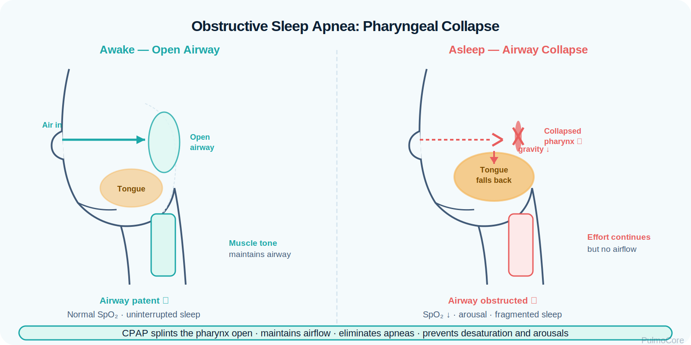
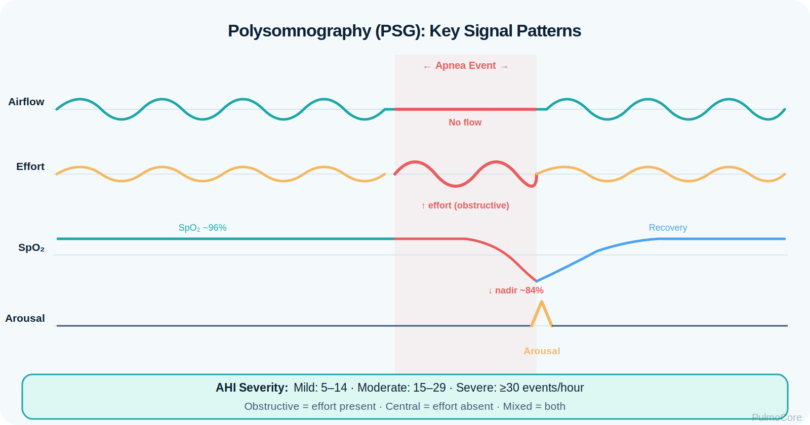
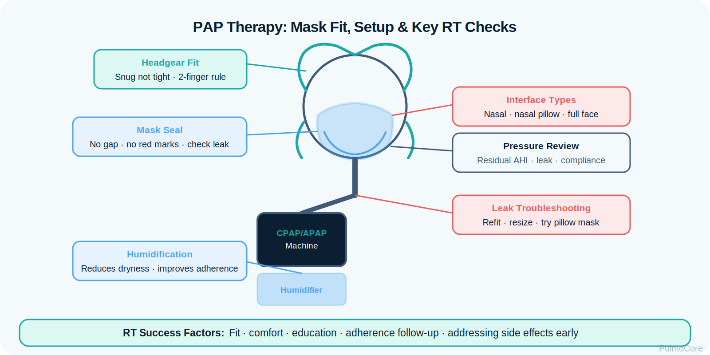

Sleep apnea is a sleep-related breathing disorder marked by repeated pauses or reductions in airflow that fragment sleep and may cause intermittent hypoxemia, sympathetic activation, pulmonary/cardiovascular strain, and daytime impairment. This module focuses on RT-level screening, diagnostic interpretation, PAP therapy, troubleshooting, and escalation when sleep-disordered breathing overlaps with hypoventilation or cardiopulmonary disease.
Category Sleep-Disordered Breathing
Estimated Time 30–40 minutes
Level Core RT Knowledge
Learning Objectives
By the end of this sleep apnea module, learners should connect upper-airway collapse, respiratory drive, sleep fragmentation, oxygen desaturation, diagnostic metrics, PAP selection, and RT troubleshooting.
1. Explain mechanisms Differentiate obstructive, central, and mixed apnea using airflow, respiratory effort, and arousal patterns.
2. Interpret diagnostics Use AHI, oxygen desaturation, PSG findings, symptoms, and comorbidities to classify severity and risk.
3. Apply PAP logic Match CPAP, APAP, bilevel, oxygen, and escalation decisions to the patient’s physiology and response.
4. Recognize danger signs Identify severe nocturnal hypoxemia, hypercapnia, heart failure overlap, opioid-related central events, and poor PAP response.
Disease Snapshot
Sleep apnea is not just snoring. Repeated events during sleep reduce airflow, fragment sleep, and may drop oxygen saturation. Obstructive sleep apnea occurs when the upper airway collapses despite continued effort. Central sleep apnea occurs when respiratory drive decreases and effort is absent.
What it is: Repeated apnea or hypopnea events during sleep.
Primary OSA problem: Upper-airway collapse with continued breathing effort.
Key diagnostic clue: Elevated AHI on polysomnography or home sleep apnea testing.
Acute concern: Severe desaturation, hypercapnia, cardiopulmonary instability, or unsafe sleepiness.
RT priority: Connect symptoms, oximetry, PAP tolerance, mask fit, leaks, residual AHI, and escalation needs.
RT Clinical Connection
For RTs, sleep apnea requires more than handing out a machine. Effective care includes screening, explaining PSG results, optimizing mask fit, reducing leak, selecting humidification, assessing adherence, and recognizing when CPAP is not enough.
Board Prep Frame
Immediately associate OSA with snoring, obesity/neck circumference risk, witnessed apneas, daytime sleepiness, elevated AHI, intermittent desaturation, CPAP therapy, and cardiovascular consequences such as systemic hypertension.
Quick Pre-Check
Start with the core sleep apnea pattern
Which statement best describes obstructive sleep apnea?
Anatomy & Pathophysiology
During sleep, loss of upper-airway muscle tone can allow the pharyngeal airway to narrow or collapse. In OSA, respiratory effort continues, but airflow is blocked or reduced. The event ends with arousal, airway reopening, oxygen recovery, and fragmented sleep.
Sleep onset → reduced upper-airway tone → pharyngeal narrowing/collapse → apnea or hypopnea → intermittent hypoxemia + arousal → sympathetic surge → sleep fragmentation and cardiopulmonary stress.

Visual learning: Use this image placeholder for a side-by-side airway graphic showing awake open airway versus sleep-related pharyngeal collapse.
What Changes During Obstructive Sleep Apnea
Sleep Apnea Change
What Happens
Why It Matters
Reduced airway tone
Pharyngeal tissue becomes more collapsible during sleep.
Sets up obstructive events.
Apnea/hypopnea
Airflow stops or decreases for at least 10 seconds.
Creates desaturation and arousal risk.
Continued effort in OSA
Chest/abdominal effort persists against a closed airway.
Differentiates OSA from central apnea.
Intermittent hypoxemia
SpO₂ repeatedly drops and recovers.
Increases cardiovascular and pulmonary stress.
Arousals
Sleep is repeatedly interrupted.
Causes daytime sleepiness and impaired cognition.
Central vs Obstructive Concept
In obstructive apnea, airflow stops but effort continues. In central apnea, airflow and effort both decrease or stop because respiratory drive is reduced. This distinction matters because CPAP splints an airway open, while central apnea may require evaluation of neurologic, cardiac, medication, altitude, or ventilatory-control causes.
Danger Sign
Severe nocturnal desaturation, morning headaches with suspected hypercapnia, opioid use, heart failure symptoms, or persistent central events on PAP require escalation instead of routine CPAP troubleshooting alone.
Click the Sleep Apnea Hotspots
Click each hotspot to reveal how that structure or signal contributes to sleep apnea.
Start here: Click all four hotspots to complete this activity.
0 / 4 hotspots reviewed
Etiology, Risk Factors & Contributors
Sleep apnea risk increases when the airway is anatomically crowded, collapsible, or exposed to conditions that reduce airway tone or ventilatory stability.
Risk Factor
Why It Matters
Teaching Focus
Obesity or increased neck circumference
Increases upper-airway collapsibility.
Screen for snoring, witnessed apneas, and daytime sleepiness.
Supine sleep
Gravity worsens posterior airway collapse.
Consider positional contribution.
Alcohol/sedatives/opioids
Reduce airway tone or ventilatory drive.
Medication history matters.
Heart failure or stroke
Can contribute to central sleep apnea.
Identify central-event risk.
Retrognathia or airway crowding
Reduces airway diameter.
Airway exam supports referral.
Sort the Sleep Apnea Factors
Choose the best category for each item, then check your answers.
Large neck circumference
Mask refit for large leak
Supine sleep position
Persistent central apneas on PAP
Heated humidification for dryness
Complete the sorting activity to continue.
Clinical Manifestations
Sleep apnea may present with nighttime symptoms, daytime impairment, or complications discovered through comorbid disease evaluation.
A patient can have severe sleep apnea without appearing acutely short of breath while awake. The danger often appears in sleep data: repeated desaturations, high AHI, arrhythmia risk, and unsafe daytime sleepiness.
Diagnostics & Assessment
Diagnostic evaluation identifies event type, severity, oxygenation burden, sleep fragmentation, and the best therapy pathway.

Visual learning: Use this image placeholder for PSG signals including airflow, effort belts, SpO₂, and arousal markers.
Sleep Study Metrics
Metric
How to Interpret
AHI
Average number of apneas and hypopneas per hour of sleep.
Oxygen nadir
Lowest SpO₂ during sleep; lower values indicate greater hypoxemia burden.
Time below 90%
Duration of clinically relevant nocturnal hypoxemia.
Event type
Obstructive events show effort; central events show absent/reduced effort.
Sleep position and REM effect
Events may worsen supine or during REM sleep.
Screening Tools
STOP-Bang and Epworth Sleepiness Scale help identify risk and symptom burden, but sleep testing is needed to diagnose and classify sleep apnea.
Severity Classification & AHI
AHI helps classify severity, but RTs should also evaluate desaturation depth, symptoms, comorbidities, and whether events are obstructive, central, or mixed.
AHI Range
Severity
Clinical Meaning
5–14 events/hour
Mild
May still be clinically important if symptoms or comorbidities are present.
15–29 events/hour
Moderate
Higher event burden; PAP therapy commonly indicated.
≥30 events/hour
Severe
High burden of obstruction/arousal/hypoxemia risk.
A sleep study shows 210 apneas/hypopneas during 6 hours of sleep. What is the AHI severity category?
Severity & Red Flags
The key question is not only “Does this patient snore?” The key question is whether sleep-disordered breathing is causing dangerous hypoxemia, hypercapnia, arrhythmia risk, or failure of usual PAP therapy.
Red Flag
Why It Matters
Severe or prolonged nocturnal desaturation
Indicates high hypoxemia burden.
Morning headaches with suspected CO₂ retention
May suggest sleep hypoventilation or obesity hypoventilation overlap.
Central apneas, opioid use, or heart failure
May require advanced evaluation and different PAP strategy.
Severe daytime sleepiness while driving/working
Safety risk requiring urgent counseling and follow-up.
Residual high AHI despite PAP use
Suggests poor mask fit, inadequate pressure, central events, or wrong mode.
PAP intolerance with severe disease
Requires rapid troubleshooting rather than abandonment of therapy.
Management & Treatment
Management depends on event type, severity, symptoms, comorbidities, and response to therapy. PAP is the central therapy for many patients, but success depends heavily on comfort, fit, education, and follow-up.
Therapy Options
Therapy
Why It Helps
RT Focus
CPAP
Splints the upper airway open with continuous pressure.
Automatically adjusts pressure within a prescribed range.
Review pressure trends and residual events.
BiPAP
Provides higher IPAP and lower EPAP.
Consider when pressure intolerance or hypoventilation support is needed.
Oral appliance
Advances mandible to reduce airway collapse in selected patients.
Recognize referral pathway.
Weight/position strategies
Reduce collapsibility or supine worsening.
Teach as adjuncts, not a substitute for indicated therapy.
Oxygen
May improve SpO₂ when ordered.
Does not correct airway obstruction or arousals by itself.

Visual learning: Use this image placeholder for mask fit, leak points, humidifier setup, and tubing orientation.
PAP Setup + Follow-Up Sequence
Select the steps in the best general order for initiating and troubleshooting PAP therapy.
Confirm diagnosis, severity, event type, and prescription
Select interface and fit mask while awake
Set prescribed PAP mode/pressure and humidification
Teach use, cleaning, leak checks, and comfort strategies
Review adherence, leak, residual AHI, and symptoms
Escalate if residual events, hypoxemia, or intolerance persist
Complete the sequence activity to continue.
Complex Sleep-Disordered Breathing
Some patients do not have simple OSA. Central events, sleep hypoventilation, obesity hypoventilation, COPD overlap, neuromuscular weakness, opioid use, and heart failure can change management.
Vent goal: Support airway patency and/or ventilation based on physiology.
Mode concept: CPAP splints obstruction; bilevel can support ventilation when needed.
Board Pearl
Do not treat oxygen desaturation alone without asking why it is happening. Oxygen may raise SpO₂, but it does not correct obstructive airway collapse, arousals, or hypoventilation unless the ordered strategy addresses the underlying physiology.
Respiratory Therapist Role
The RT supports the full sleep apnea pathway: screening, education, PSG/PAP titration support, device setup, comfort troubleshooting, adherence coaching, and escalation when therapy data show persistent problems.
Persistent central events, hypoxemia, suspected hypercapnia, severe intolerance.
Protects patients who need more than routine CPAP.
Guided Unfolding Case Study
The Snoring Patient Who Is Still Exhausted
This guided case reveals one clinical stage at a time. Learners make an RT decision, receive feedback, and then continue to the next stage.
Stage 1: Initial Screening
A 54-year-old patient reports loud snoring, witnessed pauses in breathing, morning headaches, and severe daytime sleepiness.
BMI 38 kg/m²
Neck Large circumference
BP 156/92 mm Hg
Decision Question: What is the best next step?
Stage 2: Sleep Study Results
The sleep study reports AHI 42 events/hour, oxygen nadir 78%, and obstructive events with continued respiratory effort.
Decision Question: How should this be classified?
Stage 3: PAP Initiation
The patient starts CPAP but reports dry mouth, mask leak, and removing the mask after 2 hours.
Decision Question: What should the RT prioritize?
Stage 4: Follow-Up Data
Download shows good nightly use but residual AHI remains high with several central events. The patient has heart failure.
Decision Question: What is the best RT interpretation?
Case Wrap-Up
RT Takeaway: Sleep apnea care requires matching physiology to therapy: obstruction needs airway splinting; hypoventilation may need ventilatory support; central events require escalation.
If the patient worsens: persistent desaturation, hypercapnia symptoms, residual high AHI, or central events should trigger provider/sleep specialist follow-up.
Knowledge Check
Board-Style Practice
Answer each question to complete this activity. Answer choices shuffle each time the lesson opens.
Question 1
A PSG shows absent airflow with continued chest and abdominal effort. Which event type does this support?
Question 2
Which finding is most concerning in a patient being treated for sleep apnea?
Question 3
What is the primary therapeutic purpose of CPAP in obstructive sleep apnea?
Question 4
A patient has an AHI of 18 events/hour. How is this classified?
0 / 4 questions answered
FAQ
Common Sleep Apnea Questions
What is the simplest way to understand OSA?
OSA is repeated upper-airway collapse during sleep. The patient tries to breathe, but airflow is blocked or reduced until arousal reopens the airway.
How is obstructive apnea different from central apnea?
In obstructive apnea, effort continues. In central apnea, airflow and effort are absent or reduced because respiratory drive decreases.
Does oxygen treat sleep apnea?
Oxygen may improve saturation when ordered, but it does not splint the airway open, prevent arousals, or correct obstruction by itself.
Why do patients remove CPAP at night?
Common reasons include leak, dryness, claustrophobia, pressure intolerance, wrong mask style, skin irritation, or poor education. RT troubleshooting can often fix these barriers.
What does residual AHI mean?
Residual AHI is the event burden while using therapy. A high residual AHI may indicate leak, inadequate settings, central events, or need for reassessment.
When might bilevel be considered?
Bilevel may be considered when pressure intolerance, hypoventilation, hypercapnia, or ventilatory support needs are present, depending on provider order and patient physiology.
Why is sleep apnea important for RTs?
RTs are key to PAP setup, education, adherence, device downloads, leak management, and recognition of patients who need escalation.
Summary & Clinical Pearls
Sleep apnea causes repeated airflow reduction or pauses during sleep. OSA is driven by upper-airway collapse with continued effort, while central apnea reflects reduced respiratory drive. Diagnosis depends on sleep testing, and treatment requires matching therapy to physiology while supporting PAP comfort and adherence.
Must know: OSA = airflow stops or falls while respiratory effort continues.